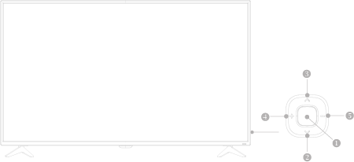
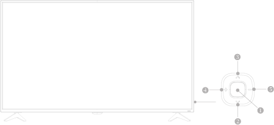

控制面板

①. |
打开/关闭控制菜单，在控制菜单上，当光标显示在音量、频道、信源时，按此按键关闭控制菜单；当光标显示在关机时， 按此按键电视关机。 |
②/③. |
在控制菜单上，当光标显示在音量时，按此键可调整音量；当光标显示在频道时，按此键可切换频道（电视通道）；当光标显示在信源时，按此键可切换信源。无菜单出现时，在电视通道下，按此键可切换频道。 |
④/⑤. |
在控制菜单上左右移动光标；无菜单出现时，按此键可调整音量大小。 |
控制面板 
|